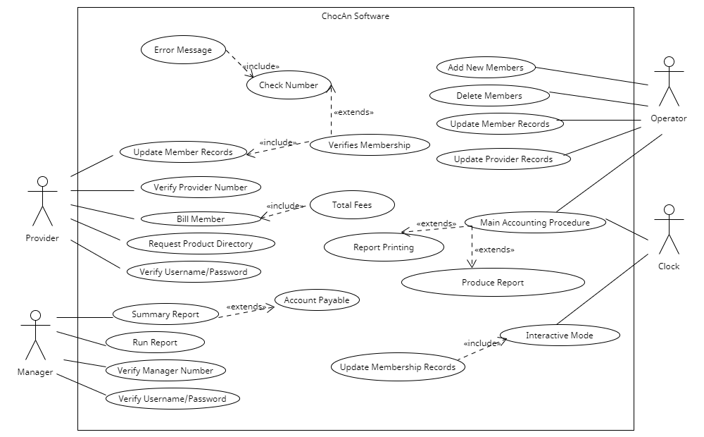
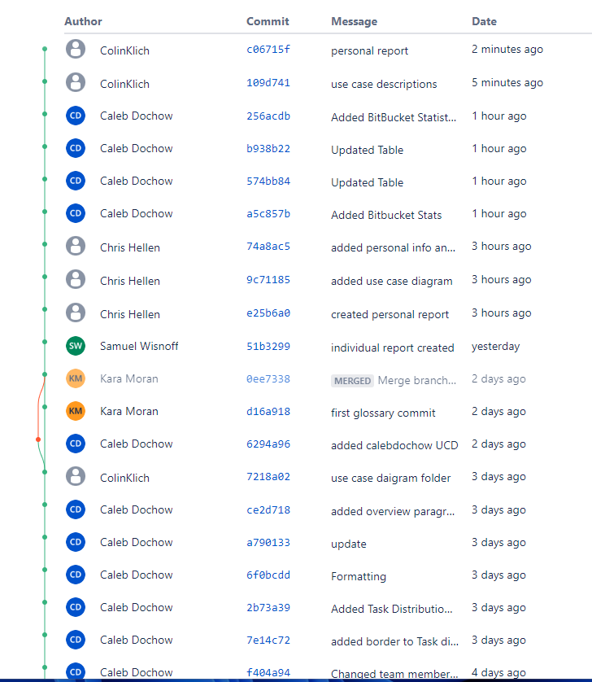
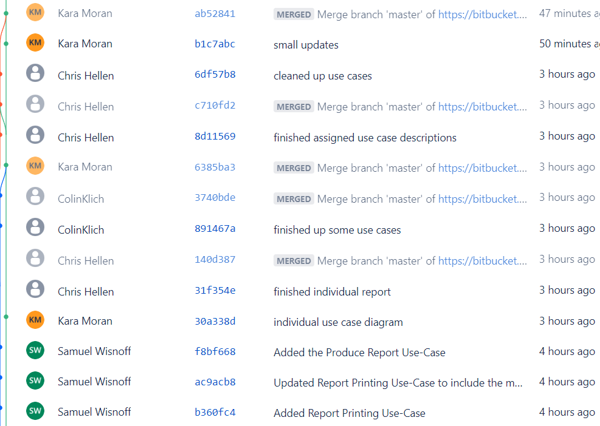

Project 1 Report
Team Members
| Name |
CWID |
Email |
Hours Worked |
| Caleb Dochow |
12158065 |
cdochow@crimson.ua.edu |
Hours Spent: 6 |
| Chris Hellen |
12066979 |
chellen@crimson.ua.edu |
Hours Spent: 6 |
| Colin Klich |
12114115 |
cmklich@crimson.ua.edu |
Hours Spent: 6 |
| Kara Moran |
12260246 |
kjmoran@crimson.ua.edu |
Hours Spent: 6 |
| Samuel Wisnoff |
12254702 |
slwisnoff@crimson.ua.edu |
Hours Spent: 6 |
Task Distrbution Table
| Name |
Task |
Percent Complete |
| Caleb Dochow |
Paragraph, Report.html, Use Case Diagram |
20% |
| Chris Hellen |
Use Case Desc., Report.html, Use Case Diagram |
20% |
| Colin Klich |
Use Case Desc., Report.html, Use Case Diagram |
20% |
| Kara Moran |
Glossary, Report.html, Use Case Diagram |
20% |
| Samuel Wisnoff |
Use Case Desc., Report.html, Use Case Diagram |
20% |
Project Overview
In Project 1, our primary focus centered on the development of data processing software tailored to the needs of Chocoholics Anonymous, an organization dedicated to helping people addicted to chocolate. It's important to emphasize that our project scope intentionally excluded the development of communication software, terminal design, and the intricacies of managing payments between members and providers. With the exception of the project submitter, every team member has contributed an HTML file housing their respective use case diagram and team-related information. This concerted effort ensures a unified understanding of the project's content, with Caleb Dochow taking the role of the project submitter.
In regards to our glossary, we took painstaking measures to meticulously define and clarify terms, drawing insights from both the Chocoholics Anonymous documentation and our collaborative Use Case Diagram. This diagram was a product of joint efforts, synthesizing input and insights from all group members. To access the Use Case Diagram, you can download it directly from the Team13_Requirements folder submission. The diagram is available in PNG format under the filename "RevisedUseCase.png," while the diagram file itself is named "RevisedP1.uxf." Our analysis led us to identify a total of 4 actors and 14 use cases, derived from a thorough examination of individual use case diagrams and a comprehensive group assessment. The Use Case diagram is presented as an image.
For a deeper comprehension of our project, we have also furnished descriptions for each use case. These descriptions were thoughtfully distributed among group members to ensure comprehensive coverage. Lastly, we've incorporated a snapshot of our Bitbucket Statistics to showcase the active involvement of everyone in the project.
Glossary
Operator Services: Third-party organization partnered with ChocAn to provide financial procedures
ChocAn Data Center: Central system which holds all data concerning members, allows managers to update information about members, and automatically runs accounting procedure weekly
Chocoholics Anonymous (ChocAn): An organization dedicataed to helping people addicted to chocolate
Clock: Runs Main Accounting procedures at set times throughout the day
Computer terminal: Interface available for providers to assist members
Error message: Returned by terminal if membership status is invalid
Electronic funds transfer (EFT): Record which contains data for the week's fees
Manager: Actor with capabilities to run reports and create summary reports
Member card: Card which holds member number encoded on magnetic strips
Member number: Unique nine-digit code addigned to each member
Member: Patron of ChocAn seeking help for chocolate addiction
Monthly fee: Payment which entitles members to unlimited access of ChocAn's services
Operator: Actor with capability to changer membership status of current members and add or delete members
Provider directory: directory which holds service codes for each service
Provider form: Documentation filled out by provider to verify software's service record
Provider number: Unique code each provider enters in order to use terminal
Report: weekly document sent as email
Service code: Unique number that corresponds to the service received by a member
Service fee: Cost associated with a certain service, paid by ChocAn
Service record: Document recorded after each member's service to keep important information in ChocAn Data Center
Summary report: Document given to manager for them to track payments due for the week
Timer: Weekly system that automatically runs accounting procedure at the end of the week
Use Case Diagram

Use Case Descriptions
Use Case: Verify Provider Number
Context: The provider inputs their code to gain access to the terminal.
Actors: Provider
Main Success Scenario:
- Provider passes card through ChocAn Terminal
- Keys in date of service
- Keys in six digit service code
- Exit
Extensions: N/A
Use Case: Update member records
Context: Provider Updates ChocAn member personal information
Actors: Provider
Main Success Scenario:
- Provider logs into ChocAn software in interactive mode
- Provider changes personal info of ChocAn member
- Exit
Extensions: N/A
Use Case: Bill member
Context: Provider Bills ChocAn for service provided
Actors: Provider
Main Success Scenario:
- Provider swipes card and keys in member number
- Keys in date service was provided
- Provider looks up and keys in correct service code
- Provider verifies the correct service was input
- ChocAn is billed for service
- Exit
Extensions: N/A
Use Case: Request provider directory
Context: Provider requests directory from ChocAn software
Actors: Provider
Main Success Scenario:
- Provider requests software product from ChocAn
- Email attachment containing list of all ChocAn products is sent
- Exit
Extensions: N/A
Use Case: Verifies Membership
Context: The ChocAn system verifies the members identity for multiple system processes, including general verification and billing.
Actors: Provider
Main Success Scenario:
- The Provider scans the Member's nine-digit membership card.
- The ChocAn Data Center responds as to whether or not the ID number is valid
Extensions:Operator can modify membership status
Suspending members, reinstating members, and updating membership records all impact the verification process
Use Case: Error Message
Context: An error message has the potential to appear when 9-digit member number is read.
Actors: Clock, Provider
Main Success Scenario
- Provider scans the members nine-digit membership card.
- If the membership number is valid, the word "Validated" appears on the terminal.
- If the membership number is invalid, the words "Invalid number" will appear.
- If the member has not paid membership fees for at least a month, the words "Member suspended" will appear.
- Return to Update Member Records
Extensions: N/A
Use Case: Check Number
Context: The Provider cross-references the member ID number with the verification info in the ChocAn Data Center
Actors: Clock, Provider
Main Success Scenario
- Provider sends the nine-digit membership ID number over to the ChocAn Data Center
- The ChocAn Data Center replies with confirmation as to whether or not that ID represents an active member.
- Exit
Extends: Validate membership
Use Case: Verify Username/Password
Context: Verification needed to run ChocAn software
Actors: Provider
Main Success Scenario
- Provider inputs their username and password into the terminal to verify their identity.
- The provider has their identity verified, granting them the ability to run reports on ChocAn services.
Extension: N/A
Use Case: Total Fees
Context: Provider totals weekly fees owed to them
Actors: Provider
Main Success Scenario
- Provider uses reports from week to verify what they are owed by ChocAn
Use Case: Summary Report
Context: Weekly report is delivered to manager to track payment information for the week.
Actors: Manager
Main Success Scenario:
- Report is delivered to manager at the end of the week
Use Case: Verify Manager number
Context: The manager inputs their code to gain access to the terminal.
Actors: Manager
Main Success Scenario:
- Manager passes card through ChocAn Terminal
- Keys in date of service
- Keys in six digit service code
- Exit
Use Case: Run Report
Context: Manager can request accounting report anytime throughout the week
Actors: Manager
Main Success Scenario
- Manager requests report from accounting system
- Exit
Extensions: N/A
Use Case: Verify Username/Password
Context: Managers have the ability to run reports on ChocAn services during the week, but they must verify their identity at the manager terminal.
Actors: Manager
Main Success Scenario
- Manager inputs their username and password into the terminal to verify their identity.
- The manager has their identity verifies, granting them the ability to run reports on ChocAn services.
Extensions: N/A
Use Case: Account Payable
Context: From the summary report given to managers, the accounts payable are listed. Every provider that needs to be paid is listed on the summary report as well as the number of consultations and final fee.
Actors: Manager
Main Success Scenario
- The manager recieves the summary report.
- The report contains info about the providers that need to be paid
- This information is billed to the company as accounts payable because the providers need to be paid for their work.
Extensions: N/A
Use Case: Add New Members
Context: When ChocAn Software is run in interactive mode during the day it allows operators to add new ChocAn members
Actors: Operator
Main Success Scenario
- Time of day is during interactive mode hours for ChocAn
- Prospective member wants to sign up for ChocAn services
- Operator logs into ChocAn software in interactive mode
- Operator adds creates a new membership for prospective member
- Member now gets access to all of ChocAn's services
- Exit
Extensions: N/A
Use Case: Delete Members
Context: When ChocAn Software is run in interactive mode during the day it allows operators to delete ChocAn members who have resigned
Actors: Operator
Main Success Scenario
- Time of day is during interactive mode hours for ChocAn
- Member has resigned from ChocAn
- Operator logs into ChocAn software in interactive mode
- Operator deletes membership for former member
- Member now loses access to all of ChocAn's services
- Exit
Extensions: N/A
Use Case: When ChocAn Software is run in interactive mode during the day it allows operators to update current ChocAn members records
Context:
Actors: Operator
Main Success Scenario
- Time of day is during interactive mode hours for ChocAn
- Current Member has outdated information on account for ChocAn
- Operator logs into ChocAn software in interactive mode
- Operator updates member details for for current member
- Members information is now up to date
- Exit
Extensions: N/A
Use Case: Update Provider Records
Context: When ChocAn Software is run in interactive mode during the day it allows operators to update current ChocAn providers records
Actors: Operator
Main Success Scenario
- Time of day is during interactive mode hours for ChocAn
- Provider has outdated information on account for ChocAn
- Operator logs into ChocAn software in interactive mode
- Operator updates provider details for for current member
- Providers information is now up to date
- Exit
Extensions: N/A
Use Case: Interactive Mode
Context: During the workday, the software enters into an interactive mode that grants operators the ability to add and alter the status of ChocAn members.
Actors: Clock
Main Success Scenario
- The software's system clock accurately detects that the ChocAn workday has started.
- Operators are then granted the ability to update the membership records of ChocAn.
- Operators can alter the membership records by adding members, deleting members, or updating member records.
Use Case: Update Membership Records
Context: Once the software switches into interactive mode, Operators gain the ability to alter membership records.
Actors: Clock
Main Success Scenario
- Operators gain the ability to add members, delete members, and update member profiles.
Extensions: N/A
Use Case: Main Accounting procedure
Context: This system compiles the week’s financial data and creates transaction reports for members,
providers, and managers at their request.
Actors: Clock
Main Success Scenario:
- 1. The transactions are recorded in the ChocAn Data Center.
- 2. The Automatic Weekly Report Generator receives data from the Data Center and creates reports for
members and providers of their respective services purchased/provided, along with their account
information. It also includes a revenue total to the provider.
- 3. The reports are emailed to the members and providers.
- Exit
Extends: Report Printing, Produce Report
Use Case: Report Printing
Context: The main accounting procedure of the ChocAn Data Center causes weekly reports to be created for members and providers.
Actors: Clock
Main Success Scenario:
Member Report
- Once the main accounting procedure finishes on Friday nights, an email is sent to the member's inbox.
- The email contains info regarding their dealings with ChocAn: member name, member number, street address, city, state, ZIP code, date of service, provider name, and service name.
- Exit
Provider Report
- Once the main accounting procedure finishes on Friday nights, an email is sent to the providers's inbox.
- The email contains all the info on the member report for the provider, but also includes the service code, fee to be paid, the total number of consultations, and the total fee for the week.
- Exit
Manager Report
- A manager report is also created that lists every provider to be paid for the week.
- The report also contains info on the number of consultations and fees for the week.
- Exit
Use Case: Produce Report
Context:
Actors: Clock
Main Success Scenario:
- The main accounting procedure produces three different reports on Fridays: the member report, the provider report, and the manager report.
- Exit
Extensions: N/A
Bitbucket Statistics

